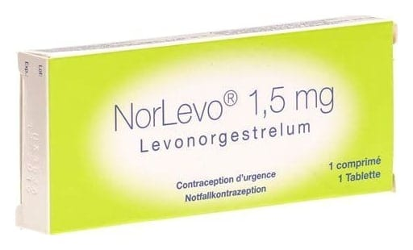

Norlevo 1,5 mg Tablet

Ne için kullanılır
KT · Bölüm 1NORLEVO, “ertesi gün hapı” olarak da bilinen bir acil doğum kontrol hapıdır.
Acil doğum kontrol yöntemi, korunmasız bir cinsel ilişki sonrasında istenmeyen hamileliği önlemek için tasarlanmış bir doğum kontrol yöntemidir.
Her bir NORLEVO paketi bir yüzünde “NL 1.5” baskısı bulunan beyaz, yuvarlak, bikonveks bir adet tablet içerir. Her bir NORLEVO tablet etkin madde olarak 1,5 mg levonorgestrel içerir.
Bu hamile kalmayı önleyici yöntem, korunmasız cinsel ilişkiden sonra, 72 saatlik (3 gün) bir süreyi aşmaksızın, mümkün olduğunca erken, tercihen ilk 12 saat içinde kullanılmalıdır. NORLEVO, korunmasız cinsel ilişkiden sonra mümkün olduğunca erken alındığında daha etkilidir. NORLEVO ancak korunmasız cinsel ilişkiden sonraki 72 saat içinde alındığında hamile kalmayı önleyebilir.
Eğer hamilelik durumu söz konusuysa NORLEVO etki etmeyecektir. NORLEVO alındıktan sonra korunmasız bir cinsel ilişkiye girilecek olursa NORLEVO hamile kalmayı engellemeyecektir.
Çalışmalarda NORLEVO’nun beklenen hamileliklerde %52-85 koruma sağladığı gösterilmiştir.
NORLEVO özellikle aşağıdaki durumlarda kullanılmalıdır: • Hamileliği önleyici bir korunma yöntemi olmaksızın bir cinsel ilişkide bulunduysanız; • Hamilelik önleyici (doğum kontrol) hapınızı zamanında almayı unuttuysanız; • Partnerinizin kondomu (prezervatifi) yırtıldıysa, sıyrıldıysa veya uygunsuz bir şekilde kullanıldıysa • Rahim-içi aracınızın (spiralinizin) çıkmış olduğundan endişe duyuyorsanız; • Vajinal diyafram veya gebelik önleyici bariyeriniz yerinden oynadıysa ya da onu erken çıkardıysanız; • Geri çekme yönteminde başarısızlıktan endişeleniyorsanız veya ritm metodu (takvim yöntemi) kullanırken hamile kalabilecek bir dönemde cinsel ilişkide bulunduysanız; • Tecavüz durumunda.
NORLEVO, yumurtalıklardan yumurta salımını engelleyerek etki gösterir. Döllenmiş yumurtanın rahime yerleşmesi sürecini durduramaz.
NORLEVO sadece bir acil doğum kontrol yöntemi olarak kullanılmalı, düzenli bir doğum kontrol yöntemi olarak kullanılmamalıdır çünkü böyle bir kullanımda, düzenli olarak her gün alınan doğum kontrol hapından daha az etkilidir.
NORLEVO ilk adet kanamasından (menarştan) önce kullanıldığında etkili değildir.